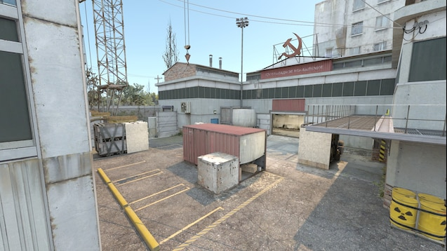

The Return Of Cache
Publicado en Steam · 29 de abril de 2026
Counter-Strike 2 ha recibido una de las actualizaciones más esperadas por la comunidad: el regreso de Cache. Este mapa clásico vuelve adaptado a CS2 y ya está disponible en varios modos de juego como Competitivo, Casual, Deathmatch y Retakes.
Cache es uno de los mapas más recordados de la historia de Counter-Strike. Durante años fue parte importante del juego competitivo y apareció en numerosas partidas profesionales. Su diseño equilibrado, con zonas reconocibles como mid, A, B y los accesos rápidos entre posiciones, hizo que muchos jugadores lo consideraran uno de los mapas más completos.
La nueva versión de Cache llega con mejoras visuales y una adaptación al motor Source 2. Esto permite una iluminación más moderna, materiales renovados y una apariencia más limpia. Aunque mantiene la esencia del mapa original, la actualización busca que el escenario se sienta más actual y encaje mejor con la calidad visual de Counter-Strike 2.
Además del regreso de Cache, la actualización también incluye pequeños ajustes en otros mapas. En Dust II, por ejemplo, se modificó la zona de Xbox en medio para revelar un salto que antes estaba oculto. También se realizaron ajustes menores en Office relacionados con la colisión de algunos elementos del escenario.
Para la comunidad, el regreso de Cache es importante porque no solo recupera un mapa querido, sino que también abre la posibilidad de que vuelva a tener presencia en partidas competitivas y torneos. Aunque Valve no ha confirmado todavía si Cache entrará de nuevo en el grupo oficial de mapas competitivos, su llegada ya ha generado mucho interés.
En resumen, esta actualización representa una mezcla entre nostalgia y renovación. Los jugadores veteranos pueden volver a disfrutar de un mapa histórico, mientras que los nuevos jugadores tienen la oportunidad de conocer uno de los escenarios más importantes de la saga.
Ver fuente oficial